Lab 1: "Expert (hopefully) systems", at FCIM.FIA
Table of Contents
from frozendict import frozendict from expert_system.goal_tree import GoalTree from expert_system.draw_goal_tree import render_DAG from expert_system.spongebob_rules import rules from expert_system.nlp import sentence_to_question
1. Task 1 & 2: Goal tree
In the MIT lab, they used a list of lists to represent IF-THEN rules:
IF( AND( '(?x) has feathers' ), # Z3 THEN( '(?x) is a bird' )), IF( AND( '(?x) flies', # Z4 '(?x) lays eggs' ), THEN( '(?x) is a bird' )),
For example, the following rules:
IF has feathers THEN bird; IF flies AND lays eggs THEN bird;
I chose a more idiomatic representation for the IF-THEN rules: a dictionary that maps facts to a list of sets where the elements of a set are AND-ed together.
For example, the above rules are expressed in the following way:
example_rules = {"bird": ({"can fly", "lays eggs"}, {"has feathers"}), "tiger": ({"has claws"},)}
1.1. Goal tree representation
I chose to represent the goal tree (aka "and-or tree") with a directed acyclic graph (DAG) data structure. A DAG is like a tree, but it can have multiple roots, and a node can have multiple parents.
Note that we can't have arches in an and-or tree, so I decided to represent the AND operation using a separate node. Thus, there are two kinds of nodes in my representation: Fact nodes and And nodes.
The rules are transformed into a DAG by constructing a GoalTree object like this:
example_gt = GoalTree(example_rules)
The GoalTree object contains the constructed DAG object in the dag field.
There is a DAG class with a pretty simple interface:
vertices()add_vertex(*vertices)add_edge(v_from, *v_to)remove_edge(v_from, v_to)vertex_size()edge_size()successors(vertex)predecessors(vertex)indegree(vertex)outdegree(vertex)
You can draw the goal tree DAG using render_DAG which uses the graphviz library:
render_DAG(example_gt.dag, fn="example")
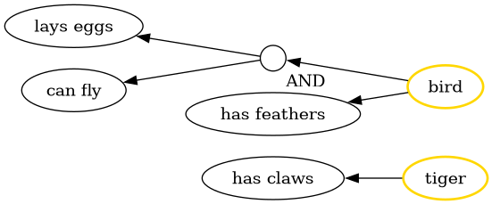
An And node is drawn as a circle with the label "AND" below it, A Fact node is drawn as an ellipse with the fact string inside.
Notice how the roots nodes (hypotheses) are on the right, whereas the leaf nodes (facts) are on the left. There arrows are pointing from the parents to the children, which is the more common notation.
This diagram's interpretation is exactly the same as that of an and-or tree,
with the addition that the truth of an And node is equal to the logical AND of the values of all its children.
Conversely, the truth of a Fact node is equal to the logical OR of the values of all its children.
A DAG with this interpretation is perfect for representing an A-or tree:
- it can have multiple hypotheses (roots)
- a fact can be present in multiple antecedents (multiple parents)
The strings for the intermediate facts don't matter too much since the user doesn't see them,
however the facts will be later transformed into questions according to specific rules,
and they all have a similar forms: PREDICATE + SUBJECT, for example "has feathers".
I decided not to use variables in the rules because they are unnecessary for this lab,
since there is only ever a single subject.
1.2. My goal tree
Here is how I defined the rules for identifying characters from the show "Spongebob Squarepants":
spongebob_rules = { "Spongebob": ({"sponge", "has a square head", "has square pants", 'wears a suit', 'is male'},), "Stanley": ({"sponge", "has a square head", "has tall body", 'wears a suit', 'is male'},), "sponge": ({"is yellow", "has holes"},), "Squidward": ({'octopus', 'wears a brown t-shirt', 'is male'},), "Squilliam": ({'octopus', 'has a thick monobrow', 'is male'},), "octopus": ({'doesn\'t have two legs', 'has a narrow face but a wide forehead and mouth'},), "starfish": ({'is coral-pink', 'has a cone-shaped head'}, {'is coral-pink', 'has red dots across its body'}), "Patrick Star": ({'starfish', 'wears only a pair of shorts', 'is male'},), "Margie Star": ({'starfish', 'has hair', 'is female'},), "Herb Star": ({'starfish', 'has a beard', 'is male'},), "crustacean": ({'is red', 'has short, thin legs', 'has large pincers'},), "crab": ({'crustacean', 'has extremely tall eyes'},), "Mr. Krabs": ({'crab', 'wears a suit', 'is male'},), "Betsy Krabs": ({'crab', 'has wrinkles', 'is female'},), "Redbeard Krabs": ({'crab', 'has an eyepatch', 'has a beard'}, {'crab', 'wears a stripped sailor shirt'}), "lobster": ({'crustacean', 'has antennae'},), "Larry the Lobster": ({'lobster', 'is male'},), "plankton": ({'has only one eye', 'is green', 'has short, thin legs', 'has antennae'},), "Sheldon J. Plankton": ({'plankton', 'is completely naked', 'is male'},), "Granny Plankton": ({'plankton', 'is female', 'has hair', 'has wrinkles'},), "computer": ({"has a square head", "doesn't have two legs"},), # gender is ambiguous, LOL "Karen Plankton": ({'computer', 'has a green line on the monitor'},), "Karen 2.0": ({'computer', 'has a red line on the monitor'}, {'computer', 'has a slick body', 'is female'}) }
Here is the diagram representing the rules:
gt = GoalTree(spongebob_rules)
render_DAG(gt.dag)
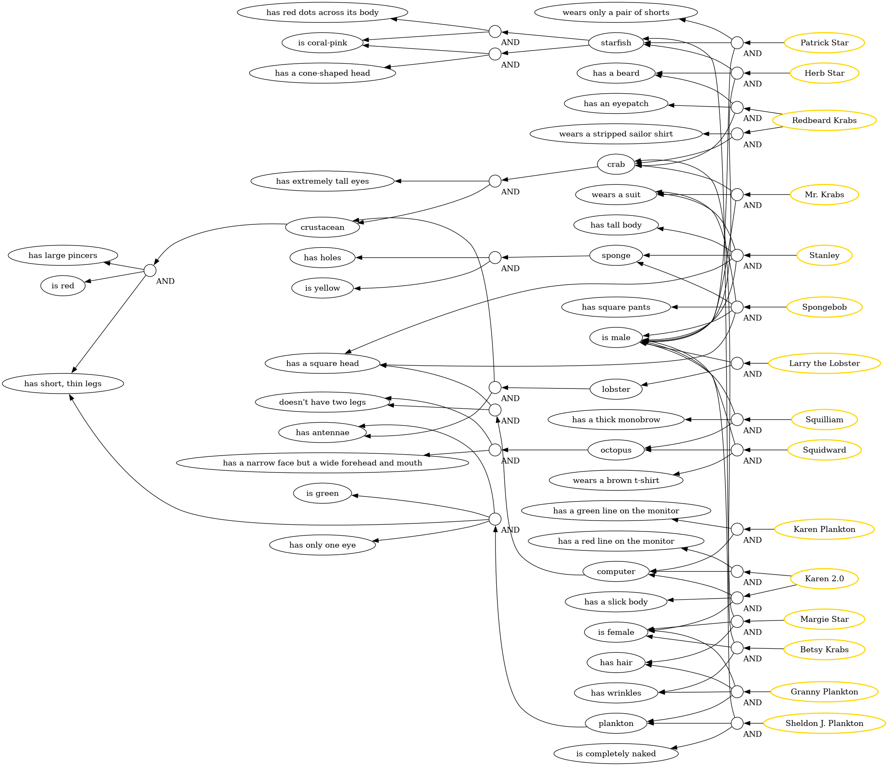
2. Task 3: Forward chaining
Forward chaining means extracting new data from known data using inference rules.
An expert system has a knowledge base and an inference engine. The knowledge base consists of two parts:
- Inference rules
- Facts
As shown above, the DAG represents the inference rules as edges between vertices. But how do we represent the data? And what exactly is the data?
In the MIT book on AI 1992, the facts in the expert system can only be tree. They don't even call them "true" but rather "satisfied". For this expert system though, we need the ability to say that some facts are false. And just for uniformity of the interface, I regard every statement in the goal tree as a fact which can have one of three truth states: true, false or unknown. Initially, all facts are unknown, and the user can assert that a fact is true or false.
We could of course keep the facts data in a separate list, but I chose to combine it with the DAG by making every vertex keep track of its truth value. Thus, the DAG represents both the inference rules as well as the facts data.
2.1. Modus ponens
The simplest method of doing forward chaining is by applying the IF-THEN rules directly:
given the facts and the inference rules, if the antecedents are true, then we deduce that the consequent must also be true.
Though, in our case with booleans, we say that a Fact node's truth value equals the OR of its children's values,
and an And node's truth value equals the AND of its children's values.
For example, let's take a simpler system:
zoo_rules = {"penguin": ({"bird", "doesn't fly"},), "albatross": ({"bird", "good flier"},), "bird": ({"flies", "lays eggs"}, {"has feathers"})} zoo_gt = GoalTree(zoo_rules) render_DAG(zoo_gt.dag, fn="zoo")
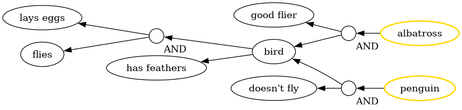
I set the truth of facts by passing a facts -> boolean dict to the GoalTree.set() method:
zoo_gt2 = zoo_gt.set({"flies": True}) render_DAG(zoo_gt2.dag, fn="zoo2")
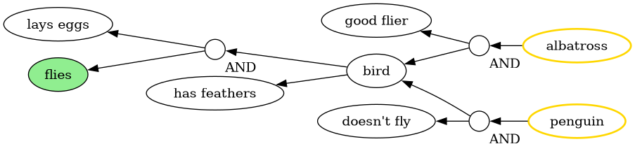
As expected, the "flies" node became green, to represent that it's a true fact. Let's set it to false instead:
zoo_gt3 = zoo_gt.set({"flies": False}) render_DAG(zoo_gt3.dag, fn="zoo3")
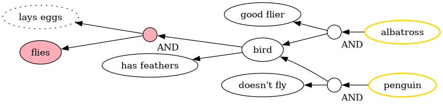
As you can see, along with the "flies" node, its parent And Node has also turned False. Intuitively, you can think that the truth value has "bubbled up" to the parents of the updated facts, updating them as well.
Let's now set both "flies" and "has feathers" to false:
zoo_gt4 = zoo_gt.set({"flies": False, "has feathers": False}) render_DAG(zoo_gt4.dag, fn="zoo4")
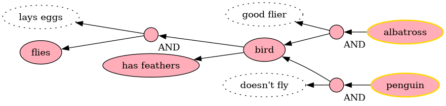
This made the "bird" fact turn false, which in turn made both the hypotheses false.
Let's try one more example:
zoo_gt5 = zoo_gt.set({"doesn't fly": True, "has feathers": True}) render_DAG(zoo_gt5.dag, fn="zoo5")
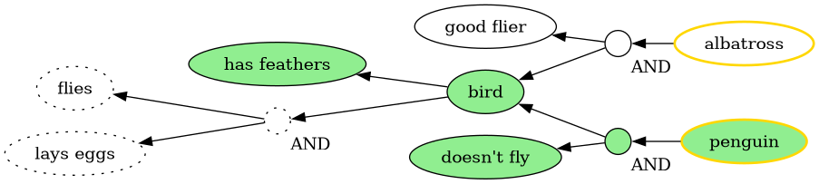
Setting "doesn't fly" and "has feathers" to true was enough to infer that "penguin" is true. Thus, by doing forward chaining we can infer information about a node from the information available about its children nodes.
Here is how I implemented this forward chaining method of inferring new data:
def update_truth(dag: DAG, assertions: frozendict[str, Optional[bool]]) -> DAG: '''Using top-down recursion, recreate the DAG while evaluating each node's truth based on the given assertions, which match facts to their truth values.''' new_dag = DAG() # a FactNode can have multiple parents which will call add_node on it, # but the add_node function is idempotent, so we can cache it @cache def add_node(node: GoalTreeNode) -> GoalTreeNode: '''For a node in the old dag compute all the children recursively, then compute the new node and add it to the new dag together with the links to its new children''' new_node: GoalTreeNode # base case: leaf node if dag.outdegree(node) == 0: assert isinstance(node, FactNode) fact = node.fact truth = assertions.get(fact) new_node = FactNode(fact, truth=truth) new_dag.add_vertex(new_node) return new_node # recursive case new_children = [add_node(succ) for succ in dag.successors(node)] children_truths = [n.truth for n in new_children] if isinstance(node, FactNode): if (truth := assertions.get(node.fact)) is None: truth = or3(children_truths) new_node = FactNode(node.fact, truth=truth) else: assert isinstance(node, AndNode) truth = and3(children_truths) new_node = AndNode(node.parent_fact, node.id, truth=truth) new_dag.add_vertex(new_node) for new_child in new_children: new_dag.add_edge(new_node, new_child) return new_node for root in dag.all_starts(): add_node(root) return new_dag
As the docstring says, I am constructing an entirely new DAG instance instead of updating the old one. This allows the function to be a bit more simple, at the cost of performance.
2.2. Pruning nodes
You might have noticed that the borders of some nodes are dotted lines. These are what I decided to call "pruned nodes". A node is pruned when its truth isn't known, but no matter which it is (true or false), it wouldn't impact the truth of its parents. As seen in the previous examples, a node is pruned when all its parents either have a known truth, or are pruned.
We don't want the expert system to ask redundant questions, which is why it is important to detect all the pruned nodes and mark them as such. For this purpose, I decided that each vertex will hold along with its truth value, a flag indicating whether it's pruned or not.
The function that updates the nodes in a DAG with information about their pruned state is very similar in principal to the previous one that updates their truth state, but in this case we do recursion from the leaves to the roots, rather than top-down:
def update_pruned(dag: DAG) -> DAG: ''' Using bottom-up recursion, recreate the DAG but with the pruned state of each node re-evaluated. A node is "pruned" when we don't care to find out its truth value. This is useful for minimizing the number of questions asked. A node is pruned if each of its parents either: 1. has a known truth (not None) 2. is pruned ''' new_dag = DAG() # the add_node function is idempotent, so we can cache it @cache def add_node(node: GoalTreeNode) -> GoalTreeNode: '''For a node in the old dag, compute all the parents recursively, then compute the new node and add it to the new dag together with the links from its parents.''' new_node: GoalTreeNode # base case: root node if dag.indegree(node) == 0: new_dag.add_vertex(node) # assuming root nodes can't be pruned return node # recursive case new_parents = [add_node(p) for p in dag.predecessors(node)] pruned = node.truth is None and all( ((p.truth is not None) or p.pruned) for p in new_parents) new_node = replace(node, pruned=pruned) new_dag.add_vertex(new_node) for new_parent in new_parents: new_dag.add_edge(new_parent, new_node) return new_node for leaf in dag.all_terminals(): add_node(leaf) return new_dag
2.3. Exclusive groups
One thing I wanted to have in my rules was the ability to say that a set of facts are mutually exclusive, meaning at most one of the facts can be true. I decided to call these sets of mutually exclusive facts exclusive groups, for the lack of a better term 1. Some examples of exclusive groups are sets of colors and species.
One obvious pair of mutually exclusive facts in the zoo example is "flies" and "doesn't fly". Let's specify this group, and try setting "flies" to true:
zoo_exclusive_groups = ({"doesn't fly", "flies"},) zoo_gt = GoalTree(zoo_rules, zoo_exclusive_groups) zoo_gt1 = zoo_gt.set({"flies": True}) render_DAG(zoo_gt1.dag, fn="exc1")
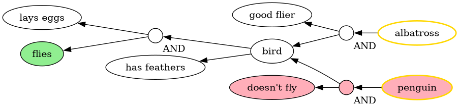
As you can see, setting "flies" to true automatically turned "doesn't fly" to false because they are in an exclusive group. This in turn bubbled up and "penguin" to false as well.
Exclusive groups, which can be thought of as an extension of the NOT rule give us more power in expressing the rules in our expert system, but they also make it more difficult to see what's going on. One way to visualize exclusive groups would be to put all the facts belonging to the same exclusive group in a container.
Here is how I implemented exclusive groups:
def update_truth_with_groups( dag: DAG, assertions: frozendict[str, Optional[bool]], exclusive_groups: tuple[set[str], ...] = tuple()): '''A wrapper around the update_truth() function which takes exclusive groups into account. Works by repeatedly: 1) inferring new assertions using from the original assertions and the list of exclusive_groups, 2) applying update_truth() until the second step can't infer any new facts. ''' while True: new_dag = update_truth(dag, assertions) truths = dag_truths(new_dag) excluded_facts: list[str] = [] for group in exclusive_groups: true_facts = [fact for fact in group if truths.get(fact) == True] if not true_facts: continue if len(true_facts) > 1: raise ValueError( "Only one fact from each exclusive group can be true.") match = true_facts[0] excluded_facts.extend(group - {match}) if not excluded_facts: break old_truths = truths truths = truths | {f: False for f in excluded_facts} if old_truths == truths: break assertions = frozendict(truths) return new_dag
This function is a wrapper around the update_truth(dag, assertions) function,
meaning it calls that function, plus does the logic of applying exclusive groups on top of that.
There might be a more efficient way to do this,
maybe by modifying the recursive algorithm of update_truth() directly.
2.4. Guaranteed facts
When Akinator can't guess who you're thinking about, he acknowledges that. For my expert system, however, I decided to make the assumption that the user will only think of a character that the system knows about. This allows the system to make assumptions about the truth of some facts in certain scenarios.
Often when there are only a few hypotheses left, they will have many facts in common. For example, in the following scenario, both hypotheses depend on the fact "bird":
rules = {"penguin": ({"bird", "swims"},), "albatross": ({"bird", "good flyer"},)} zoo_gtg = GoalTree(rules, check_guaranteed=True) render_DAG(zoo_gtg.dag, fn="guarant")
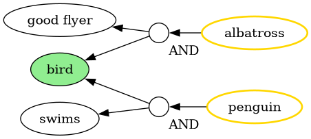
As you can see, the forward chaining algorithm had set the "bird" fact to true even though it was never specified by the user. The reason for this is that once you make the assumption that one hypothesis must be true, it follows that "bird" can't be false, because that would make all the hypotheses false. On the other hand, we can't say anything about "swims" for example: it might still be false if the solution is to be "albatross", or it might be true if the solution is to be "penguin".
Depending on how the rules are specified, this can greatly reduce the number of questions that the system needs to ask until it can figure out a solution.
An alternative to making the assumption that one and only one hypothesis is true and inferring from that the truth of some facts would be to only prefer facts that are not shared. If that could work, the system would probably be just as efficient but without making any assumptions about unknown facts.
This feature is provided by the update_guaranteed() function:
def update_guaranteed( dag: DAG, assertions: frozendict[str, Optional[bool]], exclusive_groups: tuple[set[str], ...] = tuple() ) -> frozendict[str, Optional[bool]]: '''Given a evaluated DAG, check if the truth of any leaves is guaranteed. Return the augmented dict of assertions. We make the assumption that one and only one root will be True, therefore in some cases we can guarantee that a leaf can only be true or false.''' updates: dict[str, bool] = {} for leaf in dag.all_terminals(): # Ideally we would check all nodes, not just the leaves # but that's too slow with the current approach dag_false = update_truth_with_groups( dag, assertions.set(leaf.fact, False), exclusive_groups) must_be_false = False must_be_true = False try: # this line can fail because of exclusive groups (for some reason) dag_true = update_truth_with_groups( dag, assertions.set(leaf.fact, True), exclusive_groups) try: solution(dag_true) except ValueError: must_be_false = True except ValueError: pass try: solution(dag_false) except ValueError: must_be_true = True if must_be_false and must_be_true: raise ValueError( f'Leaf {leaf} can\'t be set to either true or false.') if must_be_true: updates |= {leaf.fact: True} if must_be_false: updates |= {leaf.fact: False} return assertions | updates
This is a pretty inefficient algorithm, so much so that for the Spongebob rules it would take minutes to compute for every single node. That's why I had to hide it behind a flag, and still haven't put it in the final web app.
2.5. Everything put together
In summmary, I have implemented the following mechanisms for forward chaining:
- Inference of node truth based on its children (
update_truth()) - Pruning (
update_pruned()) - Exclusive groups (
update_truth_with_groups()) - Guaranteed facts (
update_guaranteed())
And these are the components that the inference engine uses:
- Rules
- DAG
- Assertions
- Exclusive groups
I encapsulated the four components into a GoalTree class (for the lack of a better name):
@dataclass(frozen=True) class GoalTree: ''' This is a helper class to keep the DAG together with the exclusive groups, and to automatically updated it when the assertions are changed. - dag: the DAG, evaluated using the assertions - rules: representation of the if-then rules, the mapping of facts to the and-sets - exclusive_groups: list of sets of facts, such that at most one element of each set can be true - assertions: mapping of facts to their truth value ''' rules: dict[str, tuple[set[str], ...]] exclusive_groups: tuple[set[str], ...] = tuple() assertions: frozendict[str, bool] = frozendict() dag: DAG = None check_guaranteed: bool = False
And the logic of applying all the four mechanisms is hidden inside the class constructor:
def __post_init__(self): if not isinstance(self.assertions, frozendict): object.__setattr__(self, "assertions", frozendict(self.assertions)) dag = self.dag if not self.dag: # don't reconstruct skeleton when simply updating the assertions dag = construct_dag(self.rules) dag = update_pruned( update_truth_with_groups(dag, self.assertions, self.exclusive_groups)) if self.check_guaranteed: guaranteed_assertions = update_guaranteed(dag, self.assertions, self.exclusive_groups) dag = update_pruned( update_truth_with_groups(dag, guaranteed_assertions, self.exclusive_groups)) object.__setattr__(self, "dag", dag)
This class is extremely ugly and I hate it, but I didn't have time to figure out a better interface to wrap the whole logic in. Plus, as you have seen in all the previous examples, it does its job fine.
for immutability's sake, the set() method simply constructs a new GoalTree which is
automatically evaluated in the constructor.
def set(self, new_assertions: dict[str, bool]): return GoalTree(self.rules, self.exclusive_groups, self.assertions | new_assertions, self.dag)
3. Task 4: Backward chaining
In the original MIT implementation, the backward chaining was rather complex because they used a list of rules to represent the goal tree. In my case, since I used an actual tree (a DAG to be precise), backward chaining is simply a matter of traversing the tree top-down.
Backward chaining can apparently be used for multiple purposes:
- given a list of goals, figure out which of them are satisfied according to the inference rules and known facts
- given a goal, list all facts that need to be true for the goal to be satisfied
In this lab we were tasked to implement the second kind, in the form of an "encyclopedia":
- given a goal, list its antecedents as a list of And-sets, like a definition
- do the same for every intermediate fact
It's better to see an example. For the following goal tree:
The result of doing backward chaining on the goal "penguin" should look something like this:
+ penguin: - bird AND doesn't fly + bird: - flies AND lays eggs - OR, has feathers
4. Task 5: Generating questions
For the forward chaining mode, we want to build something like Akinator: a system that tries to infer a goal (root node) by asking the user yes or no questions about the basic facts (leaf nodes).
The challenge lies in picking the right fact to ask about next in a way that minimizes the number of questions asked on average until the system deduces the answer.
I've shown that my forward-chaining algorithm already does some optimization by detecting redundant facts (by pruning nodes and checking for guaranteed facts). We greatly minimize the number of questions just by not asking about these redundant facts.
However, there is still work we can do to pick the best question out of the available ones. Consider the board game "Guess Who?". The strategy is to ask questions that get maximally close to halving the remaining options both when answered with Yes or No. This strategy is a form of binary search.
However, our expert system is a bit different than "Guess who" because not every fact is connected to every hypothesis. Therefore, the strategy is also a bit different. I won't be going into details, but for each question, we actually want to maximize the number of hypotheses turned false. Remember that only one hypothesis can be true, and that if there is only one unknown hypothesis left, then we can assume it is true.
I wrote an ad-hoc function that gives a value to a node based on how many roots it invalidates on average, as well as how many leaves it prunes on average:
def node_value(gt: GoalTree, node: FactNode) -> dict: ''' Computes the parameters that define the questioning value of a node. ''' # goal tree if node is true gt_true = gt.set({node.fact: True}) # goal tree if node is false gt_false = gt.set({node.fact: False}) def roots_turned_false(new_gt): start = sum(1 for r in gt.dag.all_starts() if r.truth == False) end = sum(1 for r in new_gt.dag.all_starts() if r.truth == False) return end-start def leaves_pruned(new_gt): start = sum(1 for r in gt.dag.all_terminals() if r.pruned) end = sum(1 for r in new_gt.dag.all_terminals() if r.pruned) return end-start rf = roots_turned_false(gt_false) rt = roots_turned_false(gt_true) lf = leaves_pruned(gt_false) lt = leaves_pruned(gt_true) # a geometric mean is higher than a regular mean when the values are closer together. # we want questions that have a larger impact both when true and when false, # otherwise the more specific questions will get a higher value. # By adding 1 to each value, we ensure that the result is not 0 when either is 0 # value = geometric_mean(rf+1, rt+1) value = 3 * geometric_mean(rf+1, rt+1) + 1 * geometric_mean(lf+1, lt+1) return {"value": value, "roots_cut_if_false": rf, "roots_cut_if_true": rt, "leaves_pruned_if_false": lf, "leaves_pruned_if_true": lt}
I print the value together with its components in a table in the web interface, which looks like this:
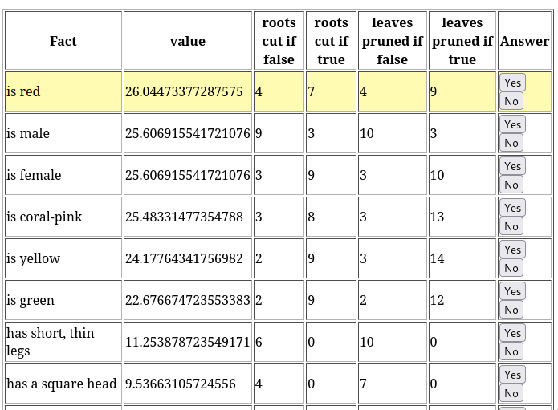
The higher the value is, the better, so the items are sorted in decreasing order with the top one being highlighted in yellow.
Unfortunately, I didn't have time to implement multiple-choice questions and another kind of question. However, I have an idea of how to implement single-choice questions based on my exclusive groups feature: every time the system wants to ask one of the facts in an exclusive group, it should instead prompt the user with all the items in the group and let him pick one or none. For example:
Which of these is true: - It is red - It is green - It is blue - None is true
And once an option is picked, it should be set to true, while all the rest will be automatically set to false.
5. Task 6: Wrap it up in an interactive system
I chose to make a web interface for the app because the app is simple enough to get away with simple forms for data submission, so I don't need any JS.
The entry point of the app is simply a list of available modes:
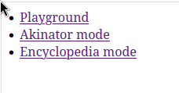
The forward-chaining mode (termed "Akinator mode") simply presents the user with the question and two buttons:
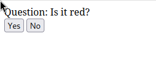
The backward-chaining mode (termed "Encyclopedia mode") first lets the user pick a hypothesis to be described:
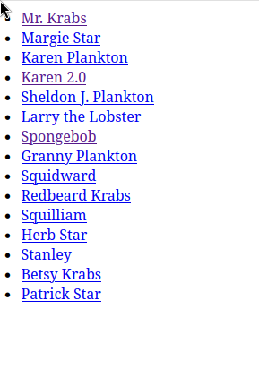
Clicking on "Mr. Krabs" for example generates this list of definitions:
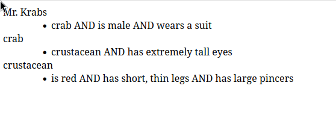
And finally, I added a "Playground" mode which is synced with the Akinator state and presents a lot of useful features:
- shows the node values
- a pannable diagram with the current state of the goal tree
- ability to answer any question, not necessarily the top one
- button to reset the game
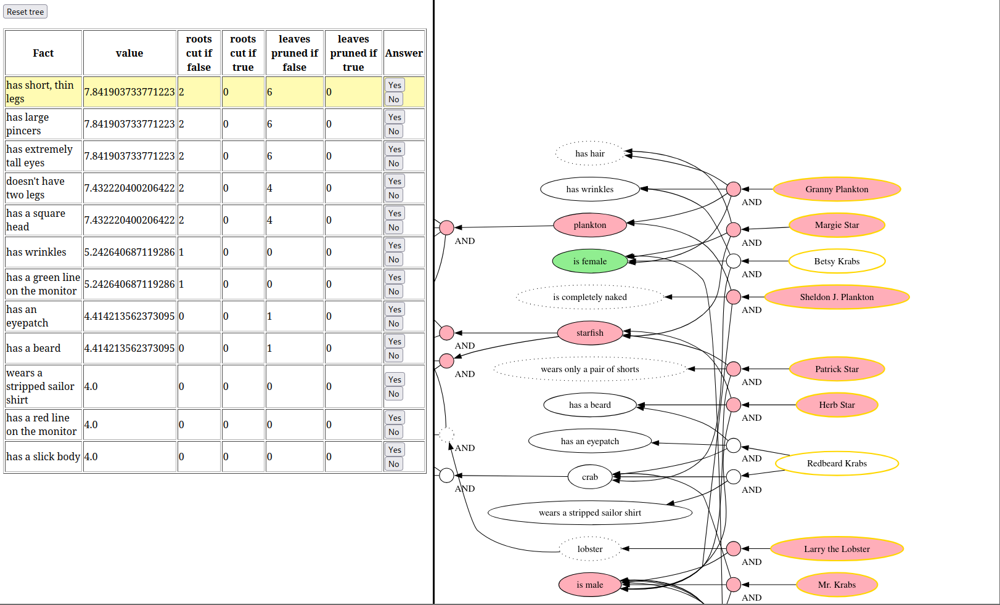
6. Task 7: human-readable questions
Transforming statements into questions was surprisingly easy for the kind of statements I had in the rules since they all had one of these four forms:
| Statement | Question |
|---|---|
it is ... |
is it ...? |
it has ... |
does it have ...? |
it <verb that ends with "s"> ... |
does it <verb without the "s"> ...? |
it doesn't ... |
does it not ...? |
I couldn't come up with any other forms of statements, so I decided that a function that will work for all my facts would be good enough. Here it is:
def sentence_to_question(sentence: str) -> str: '''Converts a statement into a question. The statement must have one of these 4 forms: ...''' words = sentence.split() if len(words) < 2: return sentence # Not a valid sentence for conversion subject = "it" verb = words[0] rest = " ".join(words[1:]) if verb == "is": return f"Is {subject} {rest}?" elif verb == "has": return f"Does {subject} have {rest}?" elif verb == "doesn't": return f"Does {subject} not {rest}?" elif verb.endswith("s"): return f"Does {subject} {verb[:-1]} {rest}?" return sentence # couldn't convert, doesn't match any known form
And here is a table, with the facts on the left and their question form on the right:
hypotheses = [n.fact for n in gt.dag.all_terminals()] [(h, sentence_to_question(h)) for h in hypotheses]
| is male | Is it male? |
| wears a brown t-shirt | Does it wear a brown t-shirt? |
| has short, thin legs | Does it have short, thin legs? |
| has extremely tall eyes | Does it have extremely tall eyes? |
| has a thick monobrow | Does it have a thick monobrow? |
| is female | Is it female? |
| has a square head | Does it have a square head? |
| has antennae | Does it have antennae? |
| has a beard | Does it have a beard? |
| has a narrow face but a wide forehead and mouth | Does it have a narrow face but a wide forehead and mouth? |
| is red | Is it red? |
| wears a stripped sailor shirt | Does it wear a stripped sailor shirt? |
| has square pants | Does it have square pants? |
| has a red line on the monitor | Does it have a red line on the monitor? |
| has large pincers | Does it have large pincers? |
| is completely naked | Is it completely naked? |
| has a cone-shaped head | Does it have a cone-shaped head? |
| is coral-pink | Is it coral-pink? |
| is yellow | Is it yellow? |
| has holes | Does it have holes? |
| has an eyepatch | Does it have an eyepatch? |
| has hair | Does it have hair? |
| has tall body | Does it have tall body? |
| wears only a pair of shorts | Does it wear only a pair of shorts? |
| doesn't have two legs | Does it not have two legs? |
| wears a suit | Does it wear a suit? |
| has a green line on the monitor | Does it have a green line on the monitor? |
| has only one eye | Does it have only one eye? |
| is green | Is it green? |
| has a slick body | Does it have a slick body? |
| has red dots across its body | Does it have red dots across its body? |
| has wrinkles | Does it have wrinkles? |
7. Conclusion
This lab was initially taken from the MIT AI, but the requirements were so different from the original ones that the goal changed from a implementing a simple inference engine to implementing a full-fledged Akinator.
It was quite fun, but the scope of the requirements was a bit too large in my opinion, judging by how much time it took me to accomplish (and I haven't even finished it yet).
8. Bibliography
[1] Winston, Patrick Henry, Artificial intelligence, Addison-Wesley Longman Publishing Co., Inc., 1992.
Footnotes:
I did spend some time researching and-or trees and expert systems online,
but I couldn't find anything of the sort of "exclusive groups".
However, I thought it would be more interesting to try and come up with something by myself
rather than find the theory worked out already.
I guess they could be represented with a bunch of NOT clauses.